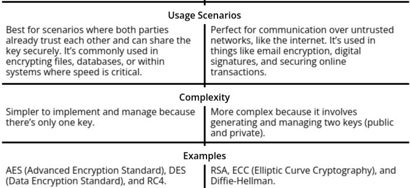

Public Key Encryption
Public Key Encryption, also known as Asymmetric Key Cryptography, is a foundational concept in modern cryptography that enables secure communication over insecure channels. Unlike Symmetric Key Cryptography, where the same key is used for both encryption and decryption, Public Key Encryption uses a pair of keys: a public key (used for encryption) and a private key (used for decryption). This revolutionary concept has made it possible for individuals and organizations to securely exchange sensitive information without the need for a pre-shared secret key, making it an essential tool for secure online transactions, email encryption, and digital signatures.
This topic is divided into several critical areas, each building upon the concept of public key encryption and its various applications:
- Difference Between Symmetric and Asymmetric Key Cryptosystems: This section explores the fundamental differences between symmetric (or secret-key) cryptosystems and asymmetric (or public-key) cryptosystems. Symmetric systems use a single key for both encryption and decryption, which requires secure key exchange mechanisms. In contrast, asymmetric systems solve this problem by using two keys: a public key, which can be freely shared, and a private key, which remains confidential. Understanding these differences is crucial for grasping the strengths and limitations of each approach in real-world cryptographic applications.
- Public-Key Cryptography: The heart of the topic, public-key cryptography, encompasses the principles that underpin asymmetric encryption systems. Public-key systems rely on the mathematical properties of numbers and their operations to create secure systems. This section covers key cryptosystems used in real-world applications:
- Principles of Public-Key Cryptosystems: These are the core concepts that explain how asymmetric encryption works, including how public and private keys interact, and the role of mathematical functions in providing security.
- RSA Algorithm: One of the most widely used public-key cryptosystems, RSA relies on the difficulty of factoring large prime numbers. It is the basis for securing web traffic (e.g., SSL/TLS), digital signatures, and more.
- Rabin Cryptosystem: A less well-known but important cryptosystem, Rabin's method is based on the difficulty of extracting square roots modulo large primes, and its security parallels RSA in some ways.
- ElGamal Cryptosystem: Another key public-key cryptosystem, ElGamal is based on the Diffie-Hellman key exchange and provides both encryption and digital signatures.
- Key Management: Key management refers to the processes and techniques involved in creating, distributing, storing, and updating cryptographic keys in a secure manner. Proper key management is crucial for maintaining the security of a cryptographic system, as the security of encrypted data is only as strong as the protection of the keys used to encrypt it.
- Public Key Distribution: Public key distribution deals with the problem of securely sharing public keys across an insecure network. Even though the public key is not secret, it must be delivered in such a way that an attacker cannot substitute a fake key. Various methods, such as certificates issued by a trusted Certificate Authority (CA), are used to ensure that the recipient is truly receiving the intended public key.
- Mathematical Foundations: The security of public-key cryptosystems is deeply rooted in number theory, particularly in the use of certain mathematical theorems that make encryption difficult to break:
- Fermat’s Theorem: Fermat's Little Theorem provides the basis for many public-key algorithms, such as RSA, by asserting properties of numbers in modular arithmetic, particularly in prime number fields.
- Euler’s Theorem: This theorem extends Fermat’s work and is used in algorithms like RSA for key generation, ensuring that decryption works correctly by defining the relationship between the totient of a number and modular exponentiation.
Difference Between Symmetric and Asymmetric Key Cryptosystems
- We know that Cryptography is all about keeping information safe and secure. Suppose you want to send a secret message to your friend without anyone else being able to read it. This is where cryptosystems come in. A cryptosystem is basically a framework or a set of rules, tools, and techniques used to protect information. It includes methods to encrypt (convert readable data into an unreadable format) and decrypt (turn the unreadable format back into readable data) messages. At the heart of every cryptosystem are keys, which act as the "special codes" that lock and unlock this information.
- Now, there are two main types of cryptosystems based on how these keys are used: symmetric key cryptosystems and asymmetric key cryptosystems. Both are like tools in a toolkit designed to solve the same problem keeping data secure but they work in very different ways.
- A symmetric key cryptosystem is the simpler of the two. It’s like sharing the same key to lock and unlock a box. Both you and your friend have the exact same key, which you use to encrypt (lock) and decrypt (unlock) messages. This method is straightforward and fast, making it ideal for situations where speed is critical, like encrypting files or databases. However, there’s a catch: you need to ensure the key remains secret. If anyone else gets their hands on it, they can read all the messages. Plus, securely sharing the key with someone else can be tricky, especially if they’re far away.
- On the other hand, an asymmetric key cryptosystem is a bit more advanced. It uses two keys: a public key and a private key. Think of it like a mailbox. The public key is like the slot where anyone can drop letters (encrypt messages), but only you, with your private key, can open the mailbox and read those letters (decrypt them). This makes it perfect for secure communication over the internet, where you don’t have to worry about someone intercepting the key. Even if someone knows your public key, they can’t use it to decrypt messages because they don’t have the matching private key.
- So, in summary, cryptosystems are the backbone of secure communication. Symmetric systems are fast and efficient but rely on keeping one key secret, while asymmetric systems are slower but far more secure, especially for sharing information over untrusted networks. Each has its strengths, and they are often used together to create a robust and secure system.

